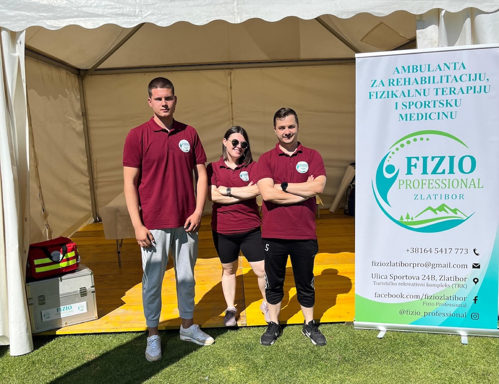
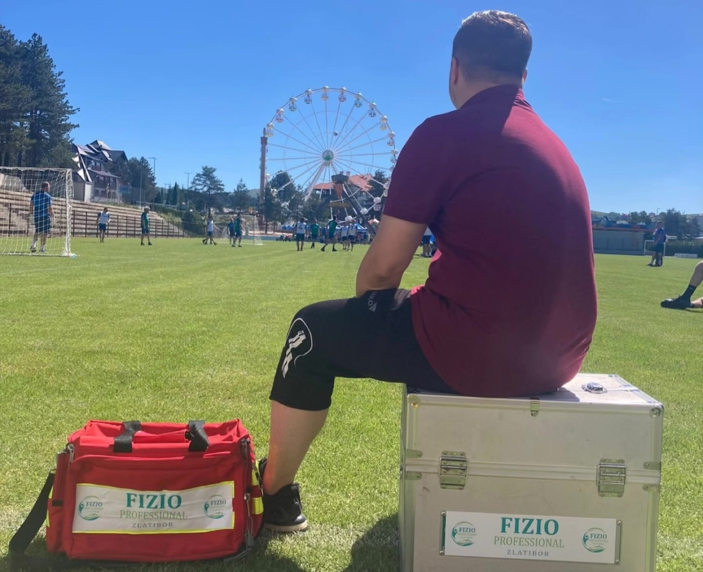
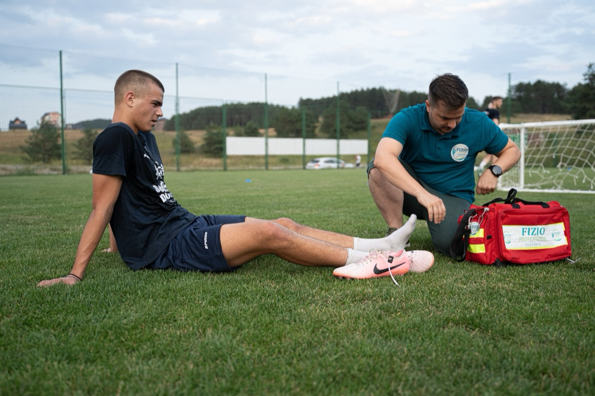
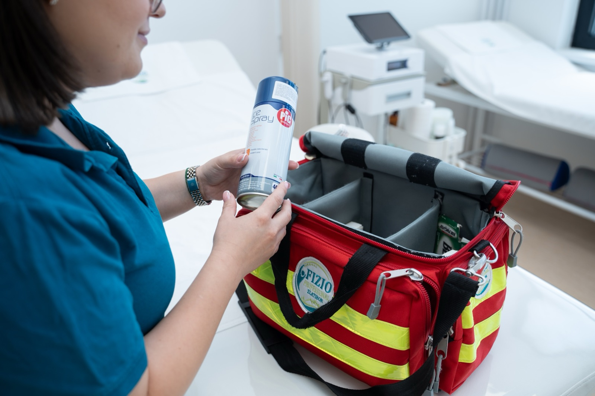

Pro Services — terenska fizioterapija za vaš tim i događaj
Vaša ekipa igra prijateljsku utakmicu na Zlatiboru, organizujete trening kamp za predsezonu, ili vodite turnir sa više dana takmičenja? Mi dolazimo kod vas — sa licenciranim fizioterapeutima, prenosivom opremom i jasnim protokolom rada sa timskim lekarom. Cilj je pokriti sve što se dešava oko utakmice ili treninga: pre‑game priprema, intervencija na terenu (pitch‑side), i kratkotrajni oporavak između nastupa.

Šta donosimo na vaš teren
Ljudi
Licencirani fizioterapeuti sa iskustvom u sportu — svako od njih odgovoran za svoju zonu pokrića i prijavljen u rasporedu utakmice ili događaja. Za veće termine dolazimo u paru ili manjem timu.
Oprema
Prenosivi sto, elektroterapija (Chattanooga Intelect), terapijski i kinezio tape, vakuum čašice, ledene i tople pakovanja, osnovni potrošni materijal. TECAR i ultrasound po dogovoru za duže angažmane.
Dokumentacija i koordinacija
Dnevnik intervencija po sportisti, koordinacija sa timskim lekarom i kondicionim trenerom, sažeti izveštaj posle događaja i predlog rehabilitacije za sledeću nedelju.
Idealno za
Radimo sa klubovima, savezima i organizatorima — od redovnih treninga do višednevnih takmičenja. Sve niže navedeno prilagođavamo broju sportista, sportu i rasporedu.
Treninzi, utakmice i kampovi
- Trening kampovi za predsezonu na Zlatiboru i u okolini
- Klupske utakmice — pre‑game priprema, pitch‑side intervencija, post‑game oporavak
- Reprezentativni kampovi i mlade selekcije
- Sportske škole i kampovi za decu
- Skijaški klubovi — domaća sezona, dolazak gostujućih ekipa
- Saradnja sa timskim lekarima i klupskim doktorima
- Tribunski sport — košarka, odbojka, rukomet
Turniri, takmičenja i događaji
- Višednevni turniri i državna prvenstva
- Maratoni, polumaratoni i planinarski izazovi
- MMA i boks događaji — corner‑side fizioterapija
- Festivali borilačkih sportova
- Karate, judo i kik‑boks takmičenja
- Triatlon i biciklističke trke
- Korporativne sportske igre i firmijada


Kako sarađujemo
Polazni okvir koji prilagođavamo vašem sportu, broju sportista i rasporedu događaja. Detalje fiksiramo u ponudi pre potpisa ugovora.
- Početna procena potreba
- broj sportista, sport, broj dana, raspored
- Personal
- 1 fizioterapeut do ~30 sportista za rutinske treninge; više osoba za utakmice/turnire
- Sati pokrivanja
- trajanje treninga/utakmice + 60 min pre i posle
- Cene
- dnevna, vikend, sezonska ili turnirska — fleksibilno
- Ugovor
- za sezonske angažmane potpisuje se sporazum sa klubom
- Lokacija
- Zlatibor, Užice, Čajetina, Mokra Gora i okolina; ostatak Srbije po dogovoru
- Dokumentacija
- dnevnik intervencija + završni izveštaj

Šta vam šaljemo unapred
- Ponudu sa rasporedom osoblja, opsegom usluge i cenom
- Listu opreme koja dolazi na teren
- Telefonski kontakt vodećeg fizioterapeuta za vaš događaj
- Osnovne sigurnosne procedure i red‑flagove za hitnu medicinsku pomoć
Šta nije obuhvaćeno
- Hitna medicinska intervencija — fizioterapeuti se koordiniraju sa lekarskim timom, ali ga ne zamenjuju kod teških povreda
- Rendgen, MR i druga radiološka snimanja
- Dugoročna rehabilitacija nakon događaja (ugovara se odvojeno u našoj ordinaciji)
- Smeštaj i prevoz osoblja kod udaljenih lokacija — obično ga obezbeđuje organizator po dogovoru
- Doping kontrola i klinički laboratorijski testovi